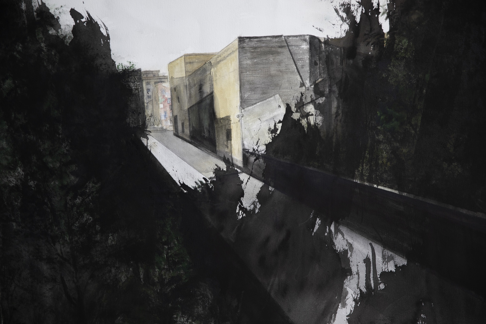

Impression of Dafen (II)
大芬印象二

- Artwork ID / 作品编号
- KW-W-000015
- Year / 年份
- 2022
- Medium / 媒介
- Watercolor on paper / 纸本水彩
- Dimensions / 尺寸
- 53 × 76 cm (H × W / 高 × 宽)
Impression of Dafen (II) is inspired by a quiet street in Dafen Village, Shenzhen. Afternoon sunlight filters through dense trees, illuminating the art museum, the road, and the residential buildings beyond, transforming an ordinary urban setting into a place of quiet depth.Although no figures appear, human presence remains. Buildings, trees, streets, and light preserve the traces left by artists, residents, visitors, and workers who have passed through this place. Their encounters, departures, and daily routines become part of the space itself.Rather than depicting people directly, the painting reflects how places retain memory. Even after people leave, the environment continues to hold the marks of lived experience, allowing each encounter to become part of the city's evolving story.
《大芬印象（二）》取材于深圳大芬村一处午后的街巷。阳光穿过繁茂的树木，洒落在美术馆、道路与远处的居民楼之间，熟悉的城市空间因光影而变得安静而深远。画面没有描绘人物，却保留了人的存在。建筑、树木、道路与光线共同记录着不同生命经过这里留下的痕迹。艺术家、居民、游客与劳动者在这里相遇、停留，又各自远去，使这片空间始终承载着丰富而真实的生活经验。我更关注空间与生命之间的关系。当人离开之后，环境依然保存着时间留下的印记，也让每一次相遇都成为这座城市记忆的一部分。